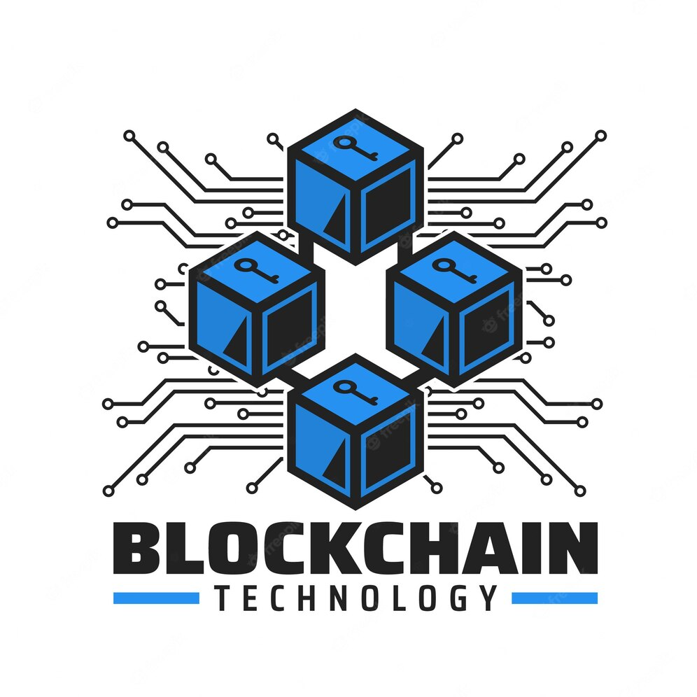

Todas las noticias en un solo portal
Nuestro portal de noticias te brinda información actualizada y confiable. Mantente al tanto de las últimas tendencias y noticias en criptomonedas.
BULL MARKET POTAL
2023Destacado
¿Que es Bitcoin?

Bitcoin es una criptomoneda virtual y descentralizada que se utiliza para realizar transacciones en línea de forma segura y privada. No está respaldada por ningún gobierno o banco central. Su utilidad principal radica en ser un medio de intercambio digital y una forma de inversión. La tecnología blockchain garantiza la transparencia y verificación de las transacciones. Bitcoin ha ganado popularidad como una alternativa de pago y como una forma de diversificar las inversiones. Sin embargo, su precio puede ser altamente volátil, lo que conlleva riesgos.
¿Que es La BlockChain?
La blockchain es una tecnología descentralizada que registra y verifica transacciones en una red de criptomonedas. Funciona mediante la creación de bloques enlazados con información cifrada, lo que garantiza la seguridad y la integridad de los datos. La blockchain no depende de una entidad central y utiliza nodos distribuidos para validar las transacciones. Es transparente difícil de modificar y se basa en algoritmos criptográficos. Además de las criptomonedas la blockchain tiene aplicaciones en sectores como la cadena de suministro y la gestión de registros médicos.
¿Que es un Smart Contract?

Un smart contract es un programa informático que se ejecuta automáticamente cuando se cumplen ciertas condiciones predefinidas. Está basado en la blockchain y permite establecer y aplicar acuerdos digitales sin intermediarios. Son transparentes, inmutables y ejecutan acciones acordadas sin posibilidad de alteración. Proporcionan seguridad, reducción de costos y automatización de procesos en diferentes sectores, eliminando la necesidad de confiar en terceros.
Contacto
Nombre:Satoshi Nakamoto
Email: SathosiNakamoto@Bitcoin.com
Teléfono: +543412565478